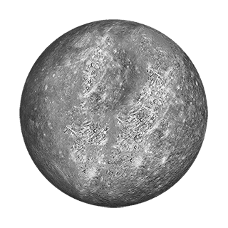
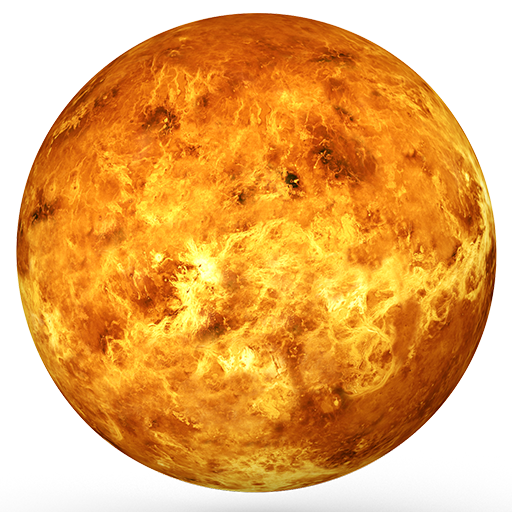
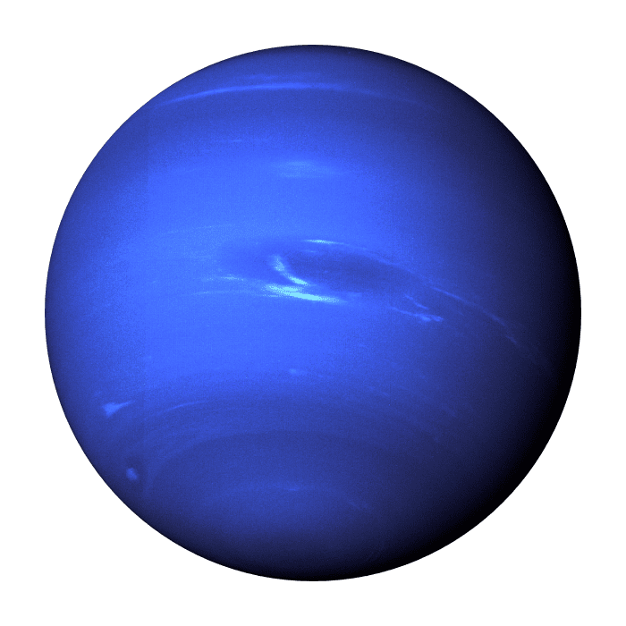

The closest planet to the Sun does indeed have ice on its surface. That sounds surprising at first glance, but the ice is found in permanently shadowed craters — those that never receive any sunlight. It is thought that perhaps comets delivered this ice to Mercury in the first place. In fact, NASA’s MESSENGER spacecraft not only found ice at the north pole, but it also found organics, which are the building blocks for life. Mercury is way too hot and airless for life as we know it, but it shows how these elements are distributed across the Solar System.
Thirty miles up (about 50 kilometers) from the surface of Venus temperatures range from 86 to 158 Fahrenheit (30 to 70 Celsius). This temperature range could accommodate Earthly life, such as “extremophile” microbes. And atmospheric pressure at that height is similar to what we find on Earth’s surface.
While the Earth appears to be round when viewed from the vantage point of space, it is actually closer to an ellipsoid. However, even an ellipsoid does not adequately describe the Earth's unique and ever-changing shape.

Mars makes a complete orbit around the Sun (a year in Martian time) in 687 Earth days. Mars is a rocky planet. Its solid surface has been altered by volcanoes, impacts, winds, crustal movement and chemical reactions.

Jupiter's stripes and swirls are actually cold, windy clouds of ammonia and water, floating in an atmosphere of hydrogen and helium. Jupiter’s iconic Great Red Spot is a giant storm bigger than Earth that has raged for hundreds of years.

You couldn't stand on Saturn, because there's no solid surface to stand on. If you tried to “land” on Saturn, you'd sink thousands of miles to depths where the heat and pressure are so high that not even the sturdiest submarine could survive!

Uranus has a unique tilt that makes it appear to spin sideways. Uranus is four times wider than Earth. Uranus is one of two ice giants in the outer solar system.

Neptune is about four times wider than Earth. Its radius is about 15,299 miles, or about 24,622 kilometers. Neptune has 14 moons.
On average, Pluto's temperature is -387°F (-232°C), making it too cold to sustain life. Pluto is orbited by five known moons, the largest of which is Charon.